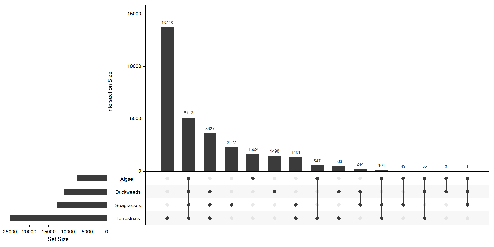
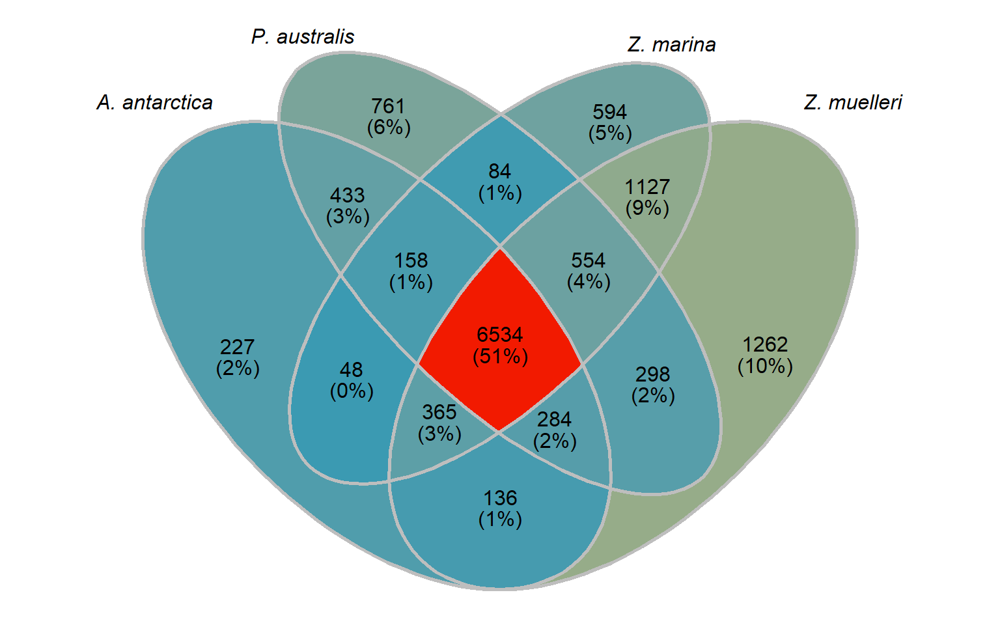

Clustering/Orthofinder analysis
Philipp Bayer
15 April 2021
Last updated: 2022-03-08
Checks: 7 0
Knit directory: Amphibolis_Posidonia_Comparison/
This reproducible R Markdown analysis was created with workflowr (version 1.6.2). The Checks tab describes the reproducibility checks that were applied when the results were created. The Past versions tab lists the development history.
Great! Since the R Markdown file has been committed to the Git repository, you know the exact version of the code that produced these results.
Great job! The global environment was empty. Objects defined in the global environment can affect the analysis in your R Markdown file in unknown ways. For reproduciblity it’s best to always run the code in an empty environment.
The command set.seed(20210414) was run prior to running the code in the R Markdown file. Setting a seed ensures that any results that rely on randomness, e.g. subsampling or permutations, are reproducible.
Great job! Recording the operating system, R version, and package versions is critical for reproducibility.
Nice! There were no cached chunks for this analysis, so you can be confident that you successfully produced the results during this run.
Great job! Using relative paths to the files within your workflowr project makes it easier to run your code on other machines.
Great! You are using Git for version control. Tracking code development and connecting the code version to the results is critical for reproducibility.
The results in this page were generated with repository version 309567a. See the Past versions tab to see a history of the changes made to the R Markdown and HTML files.
Note that you need to be careful to ensure that all relevant files for the analysis have been committed to Git prior to generating the results (you can use wflow_publish or wflow_git_commit). workflowr only checks the R Markdown file, but you know if there are other scripts or data files that it depends on. Below is the status of the Git repository when the results were generated:
Ignored files:
Ignored: .Rhistory
Ignored: .Rproj.user/
Ignored: analysis/OTT.nb.html
Ignored: analysis/figure/
Ignored: analysis/plotRgenes.nb.html
Untracked files:
Untracked: data/Lost_present_gene_lists/Genes_only_in_Algae.txt
Untracked: data/Lost_present_gene_lists/Genes_only_in_Duckweeds.txt
Untracked: output/group_venn_image.Rdata
Untracked: output/seagrass_venn_image.Rdata
Unstaged changes:
Modified: data/Lost_present_gene_lists/Genes_only_in_Aquatics_and_Seagrasses.txt
Modified: data/Lost_present_gene_lists/Genes_only_in_Aquatics_and_Seagrasses_and_Terrestrials.txt
Modified: data/arabidopsis_gene_level_comparison.xlsx
Modified: data/arabidopsis_gene_level_comparison_only_losts.xlsx
Modified: data/arabidopsis_gene_level_counts.xlsx
Note that any generated files, e.g. HTML, png, CSS, etc., are not included in this status report because it is ok for generated content to have uncommitted changes.
These are the previous versions of the repository in which changes were made to the R Markdown (analysis/Orthofinder.Rmd) and HTML (docs/Orthofinder.html) files. If you’ve configured a remote Git repository (see ?wflow_git_remote), click on the hyperlinks in the table below to view the files as they were in that past version.
| File | Version | Author | Date | Message |
|---|---|---|---|---|
| Rmd | 309567a | Philipp Bayer | 2022-03-08 | split aquatics up |
| html | 679f242 | Philipp Bayer | 2022-02-25 | Build site. |
| Rmd | 5fa37b7 | Philipp Bayer | 2022-02-25 | Fix bug in the very last lines |
| Rmd | 6ab5b93 | Philipp Bayer | 2022-02-25 | Fix typo |
| html | d366ade | Philipp Bayer | 2022-02-25 | Build site. |
| Rmd | b7bce95 | Philipp Bayer | 2022-02-25 | Fix super huge string lists |
| html | 0d1bf58 | Philipp Bayer | 2022-02-23 | Build site. |
| Rmd | 9be89cf | Philipp Bayer | 2022-02-23 | Rebuild Orthofinder analysis |
| Rmd | 6592f53 | Philipp Bayer | 2022-02-22 | Add changes |
| html | 36b882c | Philipp Bayer | 2022-02-21 | Build site. |
| Rmd | 1ae7e94 | Philipp Bayer | 2022-02-21 | venn diagram |
| Rmd | ab9a1f6 | Philipp Bayer | 2022-02-21 | add some more changes |
| html | 37bc0d6 | Philipp Bayer | 2022-01-16 | Build site. |
| Rmd | 19df596 | Philipp Bayer | 2022-01-16 | better analysis |
| Rmd | d36f0a7 | Philipp Bayer | 2021-12-20 | Add missing files |
| Rmd | 02d3e09 | Philipp Bayer | 2021-10-27 | Add missing files |
| html | 02d3e09 | Philipp Bayer | 2021-10-27 | Add missing files |
| html | c0db4a5 | Philipp Bayer | 2021-10-07 | Build site. |
| Rmd | 08b28ea | Philipp Bayer | 2021-10-07 | wflow_publish(files = c("analysis/*")) |
| Rmd | f67a752 | Philipp Bayer | 2021-04-15 | Missing commits |
| html | f67a752 | Philipp Bayer | 2021-04-15 | Missing commits |
| html | 76c8918 | Philipp Bayer | 2021-04-15 | Build site. |
| Rmd | 49dcbb8 | Philipp Bayer | 2021-04-15 | wflow_publish(files = list.files(“analysis/”, pattern = "*Rmd", |
Here I use Orthofinder results to pull out genes unique to seagrasses, unique to duckweeds, and make some nice summary tables
library(tidyverse)Warning: package 'tidyverse' was built under R version 4.1.1-- Attaching packages --------------------------------------- tidyverse 1.3.1 --v ggplot2 3.3.5 v purrr 0.3.4
v tibble 3.1.5 v dplyr 1.0.7
v tidyr 1.1.4 v stringr 1.4.0
v readr 2.0.2 v forcats 0.5.1Warning: package 'ggplot2' was built under R version 4.1.1Warning: package 'tibble' was built under R version 4.1.1Warning: package 'tidyr' was built under R version 4.1.1Warning: package 'readr' was built under R version 4.1.1Warning: package 'purrr' was built under R version 4.1.1Warning: package 'dplyr' was built under R version 4.1.1Warning: package 'stringr' was built under R version 4.1.1Warning: package 'forcats' was built under R version 4.1.1-- Conflicts ------------------------------------------ tidyverse_conflicts() --
x dplyr::filter() masks stats::filter()
x dplyr::lag() masks stats::lag()library(cowplot)Warning: package 'cowplot' was built under R version 4.1.1theme_set(theme_cowplot())
library(RColorBrewer)Warning: package 'RColorBrewer' was built under R version 4.1.1library(wesanderson)Warning: package 'wesanderson' was built under R version 4.1.1library(patchwork)Warning: package 'patchwork' was built under R version 4.1.1
Attaching package: 'patchwork'The following object is masked from 'package:cowplot':
align_plotslibrary(UpSetR)Warning: package 'UpSetR' was built under R version 4.1.1library(kableExtra)Warning: package 'kableExtra' was built under R version 4.1.2
Attaching package: 'kableExtra'The following object is masked from 'package:dplyr':
group_rowslibrary(ggVennDiagram)Warning: package 'ggVennDiagram' was built under R version 4.1.2knitr::opts_knit$set(root.dir = rprojroot::find_rstudio_root_file())groups <- read_tsv('./data/Orthogroups.tsv.gz') Rows: 31136 Columns: 20-- Column specification --------------------------------------------------------
Delimiter: "\t"
chr (20): Orthogroup, Amphibolis_final.genome.scf.bigger1kbp.all.maker.prote...
i Use `spec()` to retrieve the full column specification for this data.
i Specify the column types or set `show_col_types = FALSE` to quiet this message.names(groups) <- c('Orthogroup', 'A. antarctica', 'A. trichopada', 'B. distachyon', 'C. reinhardtii', 'L. gibba', 'O. sativa', 'P. australis', 'P. patens', 'P. trichocarpa', 'S. moellendorffii', 'S. polyrhiza', 'A. thaliana', 'T. parvula', 'V. vinifera', 'Z. mays', 'Z. muelleri', 'Z. marina', 'O. lucimarinus', 'W. australis')# for upsetr, we need to know only which OG-groups are shared between species, the actual genes don't matter
per_spec <- groups %>% pivot_longer(-Orthogroup) %>%
filter(!is.na(value)) %>% # species not in an orthogroup are still listed, they just have NA genes for this group
select(-value) # don't need all gene names, speed things up# now I want the data in this format:
# listInput <- list(one = c(1, 2, 3, 5, 7, 8, 11, 12, 13), two = c(1, 2, 4, 5,
# 10), three = c(1, 5, 6, 7, 8, 9, 10, 12, 13))
x <- per_spec %>%
select(name, Orthogroup) %>% # turn the table around
deframe() # convert to named vectormylist <- lapply(split(x, names(x)), unname) # yuck - ugly code to convert the named vector to a listx <- upset(fromList(mylist), order.by='freq', nsets = length(groups) - 1)x
Let’s get the species-only cluster numbers
species_specific_orthos <- per_spec %>%
group_by(Orthogroup) %>%
summarise(counts = length(name)) %>%
filter(counts == 1)per_spec %>%
filter(Orthogroup %in% species_specific_orthos$Orthogroup) %>%
group_by(name) %>%
count() %>%
arrange(n) %>%
kbl() %>%
kable_styling()| name | n |
|---|---|
| A. antarctica | 74 |
| S. polyrhiza | 155 |
| O. lucimarinus | 198 |
| L. gibba | 267 |
| P. australis | 267 |
| T. parvula | 273 |
| Z. marina | 322 |
| P. trichocarpa | 485 |
| A. thaliana | 489 |
| B. distachyon | 507 |
| Z. muelleri | 619 |
| V. vinifera | 682 |
| A. trichopada | 848 |
| W. australis | 1006 |
| C. reinhardtii | 1105 |
| Z. mays | 1108 |
| S. moellendorffii | 1334 |
| O. sativa | 1419 |
| P. patens | 1568 |
How many orthogroups are shared between the four seagrasses?
newlist <- mylist[c('A. antarctica', 'Z. marina', 'P. australis', 'Z. muelleri')]
x <- upset(fromList(newlist), order.by='freq', nsets = 4)x
Connect Orthofinder results with functional table of Arabidopsis genes
File comes from https://www.arabidopsis.org/download_files/Genes/TAIR10_genome_release/TAIR10_functional_descriptions
download.file('https://www.arabidopsis.org/download_files/Genes/TAIR10_genome_release/TAIR10_functional_descriptions', 'data/TAIR10_functional_descriptions')functions <- read_tsv('data/TAIR10_functional_descriptions')Rows: 41671 Columns: 5-- Column specification --------------------------------------------------------
Delimiter: "\t"
chr (5): Model_name, Type, Short_description, Curator_summary, Computational...
i Use `spec()` to retrieve the full column specification for this data.
i Specify the column types or set `show_col_types = FALSE` to quiet this message.I also downloaded the gene symbols:
esearch -db gene -query "Arabidopsis thaliana [ORGN]" | esummary | xtract -pattern DocumentSummary -element Name,OtherAliases | awk -F "\t|," '{OFS="\t"}{print $2,$1}' > arabidopsis_gene_symbols.txtsymbols <- read_tsv('./data/arabidopsis_gene_symbols.txt', col_names = c('Gene','Symbol'))Rows: 44111 Columns: 2-- Column specification --------------------------------------------------------
Delimiter: "\t"
chr (2): Gene, Symbol
i Use `spec()` to retrieve the full column specification for this data.
i Specify the column types or set `show_col_types = FALSE` to quiet this message.OK now I need to flip the Orthofinder table to then join the functional table
ara_groups <- groups %>% select(Orthogroup, `A. thaliana`) %>% filter(!is.na(`A. thaliana`)) %>% separate_rows(Orthogroup, `A. thaliana`, convert=T)
ara_groups <- ara_groups %>% separate(`A. thaliana`, c('Gene','Number'), remove=FALSE)
ara_groups <- left_join(ara_groups, symbols)Joining, by = "Gene"ara_groups$Number <- NULL
head(ara_groups)# A tibble: 6 x 4
Orthogroup `A. thaliana` Gene Symbol
<chr> <chr> <chr> <chr>
1 OG0000000 AT1G01250.1 AT1G01250 AT1G01250
2 OG0000000 AT1G04370.1 AT1G04370 ERF14
3 OG0000000 AT1G06160.1 AT1G06160 ORA59
4 OG0000000 AT1G12630.1 AT1G12630 AT1G12630
5 OG0000000 AT1G12890.1 AT1G12890 AT1G12890
6 OG0000000 AT1G19210.1 AT1G19210 AT1G19210ara_joined <- left_join(ara_groups, functions, by=c(`A. thaliana`='Model_name'))You know what? we shouldn’t directly compare a dicot (A. thaliana) with monocots (seagrasses), should also add another regular monocot (rice)
posi_groups <- groups %>% select(Orthogroup, `P. australis`) %>% filter(!is.na(`P. australis`)) %>% separate_rows(Orthogroup, `P. australis`, convert=T, sep = ', ')
amphi_groups <- groups %>% select(Orthogroup, `A. antarctica`) %>% filter(!is.na(`A. antarctica`)) %>% separate_rows(Orthogroup, `A. antarctica`, convert=T, sep = ', ')
zmar_groups <- groups %>% select(Orthogroup, `Z. marina`) %>% filter(!is.na(`Z. marina`)) %>% separate_rows(Orthogroup, `Z. marina`, convert=T, sep = ', ')
zmuel_groups <- groups %>% select(Orthogroup, `Z. muelleri`) %>% filter(!is.na(`Z. muelleri`)) %>% separate_rows(Orthogroup, `Z. muelleri`, convert=T, sep = ', ')
w_australis_groups <- groups %>% select(Orthogroup, `W. australis`) %>% filter(!is.na(`W. australis`)) %>% separate_rows(Orthogroup, `W. australis`, convert=T, sep = ', ')
s_polyrhiza_groups <- groups %>% select(Orthogroup, `S. polyrhiza`) %>% filter(!is.na(`S. polyrhiza`)) %>% separate_rows(Orthogroup, `S. polyrhiza`, convert=T, sep = ', ')
l_gibba_groups <- groups %>% select(Orthogroup, `L. gibba`) %>% filter(!is.na(`L. gibba`)) %>% separate_rows(Orthogroup, `L. gibba`, convert=T, sep = ', ')
rice_groups<- groups %>% select(Orthogroup, `O. sativa`) %>% filter(!is.na(`O. sativa`)) %>% separate_rows(Orthogroup, `O. sativa`, convert=T, sep = ', ')big_joined <- ara_joined %>% mutate(
present_in_zmuel = case_when(Orthogroup %in% unique(zmuel_groups$Orthogroup) ~ T,
TRUE ~ F),
present_in_zmar = case_when(Orthogroup %in% unique(zmar_groups$Orthogroup) ~ T,
TRUE ~ F),
present_in_amphi = case_when(Orthogroup %in% unique(amphi_groups$Orthogroup) ~ T,
TRUE ~ F),
present_in_posi = case_when(Orthogroup %in% unique(posi_groups$Orthogroup) ~ T,
TRUE ~ F),
present_in_waustralis = case_when(Orthogroup %in% unique(w_australis_groups$Orthogroup) ~ T,
TRUE ~ F),
present_in_spolyrhiza = case_when(Orthogroup %in% unique(s_polyrhiza_groups$Orthogroup) ~ T,
TRUE ~ F),
present_in_lgibba = case_when(Orthogroup %in% unique(l_gibba_groups$Orthogroup) ~ T,
TRUE ~ F),
present_in_rice = case_when(Orthogroup %in% unique(rice_groups$Orthogroup) ~ T,
TRUE ~ F)
)Done :) Now we have a big table with all A. thaliana gene functions and whether these genes are present in clusters of the four seagrasses and three duckweeds.
Let’s also add counts - how often is this gene lost?
big_joined <- big_joined %>% mutate(Lost_in_Seagrasses = 4 - (present_in_posi + present_in_zmuel + present_in_zmar + present_in_amphi),
Lost_in_duckweeds=3 - (present_in_lgibba + present_in_spolyrhiza + present_in_waustralis),
Lost_in_both = (Lost_in_Seagrasses + Lost_in_duckweeds))big_joined %>% writexl::write_xlsx('data/arabidopsis_gene_level_comparison.xlsx')
big_joined %>% filter_at(vars(starts_with('present')), any_vars(. == FALSE)) %>% writexl::write_xlsx('data/arabidopsis_gene_level_comparison_only_losts.xlsx')That was about loss - can we also check for gene family extension using the A. thaliana genes?
Gene family extension
First, let’s count how many members each of these orthogroups has per species.
ara_count <- ara_joined %>% count(Orthogroup)
posi_count <- posi_groups %>% count(Orthogroup)
amphi_count <- amphi_groups %>% count(Orthogroup)
zmar_count <- zmar_groups %>% count(Orthogroup)
zmuel_count <- zmuel_groups %>% count(Orthogroup)
lgibba_count <- l_gibba_groups %>% count(Orthogroup)
s_polyrhi_count <- s_polyrhiza_groups %>% count(Orthogroup)
w_aus_count <- w_australis_groups %>% count(Orthogroup)
rice_count <- rice_groups %>% count(Orthogroup)counts <- plyr::join_all(list(ara_count, posi_count, amphi_count, zmar_count, zmuel_count, lgibba_count, s_polyrhi_count, w_aus_count, rice_count), by='Orthogroup', type='left')
names(counts) <- c('Orthogroup', 'A. thaliana', 'P. australis', 'A. antarctica', 'Z. marina', 'Z. muelleri', 'L. gibba', 'S. polyrhiza', 'W. australis', 'O. sativa')
head(counts) Orthogroup A. thaliana P. australis A. antarctica Z. marina Z. muelleri
1 OG0000000 112 19 23 76 76
2 OG0000001 81 49 41 85 116
3 OG0000002 97 60 61 16 23
4 OG0000003 88 12 13 51 58
5 OG0000005 64 31 33 31 50
6 OG0000006 53 21 17 28 30
L. gibba S. polyrhiza W. australis O. sativa
1 69 48 84 113
2 96 59 63 86
3 56 20 35 84
4 55 35 35 131
5 36 35 53 59
6 60 21 28 53joined_counts <- left_join(big_joined, counts, by='Orthogroup') %>% select(-starts_with('present')) %>%
select(-starts_with('Lost_i'))
joined_counts %>% writexl::write_xlsx('data/arabidopsis_gene_level_counts.xlsx')FINAL version redoing - terrestrial vs aquatics vs seagrasses
Plotting all species separately is messy as I have so many species. I’m joining the species into three groups: aquatics, terrestrials, and seagrasses!
per_group_spec <-
per_spec %>% mutate(group = case_when(
name %in% c(
'A. trichopada',
'B. distachyon',
'O. sativa',
'P. patens',
'P. trichocarpa',
'S. moellendorffii',
'A. thaliana',
'T. parvula',
'V. vinifera',
'Z. mays'
) ~ 'Terrestrials',
name %in% c(
'L. gibba',
'S. polyrhiza',
'W. australis'
) ~ 'Duckweeds',
name %in% c(
'C. reinhardtii',
'O. lucimarinus'
) ~ 'Algae',
name %in% c(
'P. australis',
'Z. muelleri',
'Z. marina',
'A. antarctica'
) ~ 'Seagrasses'
)) # now I want the data in this format:
# listInput <- list(one = c(1, 2, 3, 5, 7, 8, 11, 12, 13), two = c(1, 2, 4, 5,
# 10), three = c(1, 5, 6, 7, 8, 9, 10, 12, 13))
groupx <- per_group_spec %>%
select(group, Orthogroup) %>% # turn the table around
deframe() # convert to named vectormylistgroup <- lapply(split(groupx, names(groupx)), unname) # yuck - ugly code to convert the named vector to a list
mylistgroup <- lapply(mylistgroup, unique)xgroup <- upset(fromList(mylistgroup), order.by='freq', nsets = length(groups) - 1)xgroup
MUCH better. The biggest chunk of orthogroups is not in aquatics or seagrasses with 13562 orthogroups. 3845 orthogroups are in duckweeds, seagrasses, terrestrials, but not algae - 2217 orthogroups are unique in seagrasses.
OK now we need to do the GOenrichment for those four groups.
Let’s also make an Venn plot, we have only four groups:
# code from https://github.com/gaospecial/ggVennDiagram/blob/4cb2aa13c7beae469f9b9836c5d4f94610bd872e/R/ggVennDiagram.R to customise
venn <- Venn(mylistgroup)
data <- process_data(venn)
region_label <- data@region %>%
dplyr::filter(.data$component == "region") %>%
dplyr::mutate(percent = paste(round(.data$count*100/sum(.data$count),
digits = 0),"%", sep="")) %>%
dplyr::mutate(both = paste(.data$count,paste0("(",.data$percent,")"),sep = "\n"))
group_venn <- ggplot() +
geom_sf(aes_string(fill="count"), data = data@region) +
geom_sf(aes_string(color = "id"), data = data@setEdge, show.legend = F,
lty = 'solid', size = 1, color='gray') +
geom_sf_text(aes_string(label = "name"), data = data@setLabel,
size = NA,
color = 'black') +
theme_void() +
geom_sf_label(aes_string(label='both'),
data = region_label,
alpha= 0.0,
color = 'black',
size = NA,
lineheight = 0.85,
label.size = NA) +
scale_fill_gradientn(colours=wes_palette("Zissou1", 100, type = "continuous")) +
theme(legend.position = "none") +
scale_x_continuous(expand = expansion(mult = .2)) #trick from https://github.com/gaospecial/ggVennDiagram/blob/9435aa0ab4abb470c670ecb938c71576461ccedc/vignettes/using-ggVennDiagram.Rmd#L65
group_venn
Nice!
Write out the per-group GO-terms
Now we pull out all gene-IDs that are only in terrestrials, only in seagrasses, only in aquatics, and unique for each of these three groups, AND we pull out the IDs only present in the four seagrasses each compared with the others.
gene_per_spec <- groups %>% pivot_longer(-Orthogroup) %>%
filter(!is.na(value)) %>%
mutate(group = case_when(
name %in% c(
'A. trichopada',
'B. distachyon',
'O. sativa',
'P. patens',
'P. trichocarpa',
'S. moellendorffii',
'A. thaliana',
'T. parvula',
'V. vinifera',
'Z. mays'
) ~ 'Terrestrials',
name %in% c(
'L. gibba',
'S. polyrhiza',
'W. australis'
) ~ 'Duckweeds',
name %in% c(
'C. reinhardtii',
'O. lucimarinus'
) ~ 'Algae',
name %in% c(
'P. australis',
'Z. muelleri', 'Z. marina', 'A. antarctica') ~ 'Seagrasses'
)) mylistgroup now looks like this: key is Aquatics, Seagrasses, Terrestrials, values are OG00000, OG00001, OG00002 etc.
present_algae_only <- setdiff(setdiff(setdiff(mylistgroup$Algae, mylistgroup$Duckweeds),
mylistgroup$Seagrasses), mylistgroup$Terrestrials)
present_seagrasses_only <- setdiff(setdiff(setdiff(mylistgroup$Seagrasses, mylistgroup$Duckweeds), mylistgroup$Terrestrials), mylistgroup$Algae)
present_terrestrials_only <- setdiff(setdiff(setdiff(mylistgroup$Terrestrials, mylistgroup$Duckweeds), mylistgroup$Seagrasses), mylistgroup$Algae)
present_duckweeds_only <- setdiff(setdiff(setdiff(mylistgroup$Duckweeds, mylistgroup$Terrestrials), mylistgroup$Seagrasses), mylistgroup$Algae)
print(cbind(length(present_algae_only), length(present_seagrasses_only), length(present_terrestrials_only), length(present_duckweeds_only))) [,1] [,2] [,3] [,4]
[1,] 1668 2217 13562 1765OK those numbers fit with the above Venn diagram. I now have four lists of orthogroup names.
I also want the orthogroups present in aquatics + seagrasses, NOT terrestrials
present_seagrass_and_aquatics_only <- setdiff(intersect(intersect(mylistgroup$Duckweeds, mylistgroup$Seagrasses), mylistgroup$Algae),
mylistgroup$Terrestrials)
print(length(present_seagrass_and_aquatics_only))[1] 2That’s the tiny intersection of genes shared between aquatics and seagrasses, let’s also get the union of seagrass genes, aquatic genes, and their intersection
present_seagrass_and_aquatics_union <- union(mylistgroup$Algae, union(mylistgroup$Duckweeds, mylistgroup$Seagrasses))
print(length(present_seagrass_and_aquatics_union))[1] 17574OK let’s also get the intersection in the middle
present_all <- intersect(intersect(mylistgroup$Algae, intersect(mylistgroup$Terrestrials, mylistgroup$Duckweeds)), mylistgroup$Seagrasses)
length(present_all)[1] 5136Now we pull out these gene IDs and write them out for files to continue in GOenrichment.
# gene_per_spec has the genes per orthogroup, we need to join with the various set-results we've made
genes_in_all <- gene_per_spec %>% filter(Orthogroup %in% present_all) %>% separate_rows(value, sep=',') %>% pull(value) %>% str_trim()
genes_only_in_aquatics_and_seagrasses <- gene_per_spec %>% filter(Orthogroup %in% present_seagrass_and_aquatics_only) %>% separate_rows(value, sep=',') %>% pull(value) %>% str_trim()
genes_present_seagrass_and_aquatics_union <- gene_per_spec %>% filter(Orthogroup %in% present_seagrass_and_aquatics_union) %>% separate_rows(value, sep=',') %>% pull(value) %>% str_trim()
genes_only_in_duckweeds <- gene_per_spec %>% filter(Orthogroup %in% present_duckweeds_only) %>% separate_rows(value, sep=',') %>% pull(value) %>% str_trim()
genes_only_in_algae <- gene_per_spec %>% filter(Orthogroup %in% present_algae_only) %>% separate_rows(value, sep=',') %>% pull(value) %>% str_trim()
genes_only_in_seagrasses <- gene_per_spec %>% filter(Orthogroup %in% present_seagrasses_only) %>% separate_rows(value, sep=',') %>% pull(value) %>% str_trim()
genes_only_in_terrestrials <- gene_per_spec %>% filter(Orthogroup %in% present_terrestrials_only) %>% separate_rows(value, sep=',') %>% pull(value) %>% str_trim()Now we have a bunch of lists, we can write them into files for the GO enrichment part
fileConn<-file('data/Lost_present_gene_lists/Genes_only_in_Terrestrials.txt')
writeLines(genes_only_in_terrestrials, fileConn)
close(fileConn)
fileConn<-file('data/Lost_present_gene_lists/Genes_only_in_Seagrasses.txt')
writeLines(genes_only_in_seagrasses, fileConn)
close(fileConn)
fileConn<-file('data/Lost_present_gene_lists/Genes_only_in_Duckweeds.txt')
writeLines(genes_only_in_duckweeds, fileConn)
close(fileConn)
fileConn<-file('data/Lost_present_gene_lists/Genes_only_in_Algae.txt')
writeLines(genes_only_in_algae, fileConn)
close(fileConn)
fileConn<-file('data/Lost_present_gene_lists/Genes_only_in_Aquatics_and_Seagrasses.txt')
writeLines(genes_only_in_aquatics_and_seagrasses, fileConn)
close(fileConn)
fileConn<-file('data/Lost_present_gene_lists/Genes_union_of_Seagrass_and_Aquatics_union.txt')
writeLines(genes_present_seagrass_and_aquatics_union, fileConn)
close(fileConn)
fileConn<-file('data/Lost_present_gene_lists/Genes_only_in_Aquatics_and_Seagrasses_and_Terrestrials.txt')
writeLines(genes_in_all, fileConn)
close(fileConn)Dig into seagrass specific differences
In this section, I compare the four seagrasses with each other only, so we can ignore the previous section and go back to the original orthogroups.
seagrass_groups <- groups %>% select(Orthogroup, `A. antarctica`, `P. australis`, `Z. marina`, `Z. muelleri`) %>%
rowwise() %>%
mutate(na_count = sum(is.na(c(`A. antarctica`, `P. australis`, `Z. marina`, `Z. muelleri`)))) %>%
filter(na_count != 4) %>%
select(-na_count)Let’s make a Venn diagram like above. We need a list, with the species as keys, and the c(rownumber)
big_list <- list()
big_list[['A. antarctica']] <- seagrass_groups %>% select(Orthogroup, `A. antarctica`) %>% filter(!is.na(`A. antarctica`)) %>% pull(Orthogroup)
big_list[['P. australis']] <- seagrass_groups %>% select(Orthogroup, `P. australis`) %>% filter(!is.na(`P. australis`)) %>% pull(Orthogroup)
big_list[['Z. marina']] <- seagrass_groups %>% select(Orthogroup, `Z. marina`) %>% filter(!is.na(`Z. marina`)) %>% pull(Orthogroup)
big_list[['Z. muelleri']] <- seagrass_groups %>% select(Orthogroup, `Z. muelleri`) %>% filter(!is.na(`Z. muelleri`)) %>% pull(Orthogroup)venn <- Venn(big_list)
data <- process_data(venn)
# code from https://github.com/gaospecial/ggVennDiagram/blob/4cb2aa13c7beae469f9b9836c5d4f94610bd872e/R/ggVennDiagram.R to customise
region_label <- data@region %>%
dplyr::filter(.data$component == "region") %>%
dplyr::mutate(percent = paste(round(.data$count*100/sum(.data$count),
digits = 0),"%", sep="")) %>%
dplyr::mutate(both = paste(.data$count,paste0("(",.data$percent,")"),sep = "\n"))
seagrass_venn <- ggplot() +
geom_sf(aes_string(fill="count"), data = data@region) +
geom_sf(aes_string(color = "id"), data = data@setEdge, show.legend = F,
lty = 'solid', size = 1, color='gray') +
geom_sf_text(aes_string(label = "name"), data = data@setLabel,
size = NA, fontface='italic',
color = 'black') +
theme_void() +
geom_sf_label(aes_string(label='both'),
data = region_label,
alpha= 0,
color = 'black',
size = NA,
lineheight = 0.85,
label.size = NA) +
scale_fill_gradientn(colours=wes_palette("Zissou1", 100, type = "continuous")) +
theme(legend.position = "none") +
scale_x_continuous(expand = expansion(mult = .2)) #trick from https://github.com/gaospecial/ggVennDiagram/blob/9435aa0ab4abb470c670ecb938c71576461ccedc/vignettes/using-ggVennDiagram.Rmd#L65
seagrass_venn
Both Venns together
Let’s save both Venns so I can combine them with other plots in other Rmds.
save(group_venn, file='output/group_venn_image.Rdata')
save(seagrass_venn, file='output/seagrass_venn_image.Rdata')group_venn / seagrass_venn + plot_annotation(tag_levels = 'A')
OK now as above, we dig out the gene names.
# gene_per_spec has the genes per orthogroup, we need to join with the various set-results we've made
groups_only_in_A_antarctica <- setdiff(setdiff(setdiff(big_list[['A. antarctica']], big_list[['P. australis']]), big_list[['Z. marina']]), big_list[['Z. muelleri']])
genes_only_in_A_antarctica <- gene_per_spec %>%
filter(name == 'A. antarctica', Orthogroup %in% groups_only_in_A_antarctica) %>%
separate_rows(value, sep=',') %>% pull(value) %>% str_trim()
groups_only_in_P_australis <- setdiff(setdiff(setdiff(big_list[['P. australis']], big_list[['A. antarctica']]), big_list[['Z. marina']]), big_list[['Z. muelleri']])
genes_only_in_P_australis <- gene_per_spec %>%
filter(name == 'P. australis', Orthogroup %in% groups_only_in_P_australis) %>%
separate_rows(value, sep=',') %>% pull(value) %>% str_trim()
groups_only_in_Z_marina <- setdiff(setdiff(setdiff(big_list[['Z. marina']], big_list[['A. antarctica']]), big_list[['P. australis']]), big_list[['Z. muelleri']])
genes_only_in_Z_marina <- gene_per_spec %>%
filter(name == 'Z. marina', Orthogroup %in% groups_only_in_Z_marina) %>%
separate_rows(value, sep=',') %>% pull(value) %>% str_trim()
groups_only_in_Z_muelleri <- setdiff(setdiff(setdiff(big_list[['Z. muelleri']], big_list[['A. antarctica']]), big_list[['P. australis']]), big_list[['Z. marina']])
genes_only_in_Z_muelleri <- gene_per_spec %>%
filter(name == 'Z. muelleri', Orthogroup %in% groups_only_in_Z_muelleri) %>%
separate_rows(value, sep=',') %>% pull(value) %>% str_trim()
groups_in_all_seagrasses <- union(union(union(big_list[['Z. muelleri']], big_list[['A. antarctica']]), big_list[['P. australis']]), big_list[['Z. marina']])
groups_lost_in_A_antarctica <- setdiff(groups_in_all_seagrasses, big_list[['A. antarctica']])
genes_lost_in_A_antarctica <- gene_per_spec %>%
filter(name != 'A. antarctica', Orthogroup %in% groups_lost_in_A_antarctica) %>%
separate_rows(value, sep=',') %>% pull(value) %>% str_trim()
groups_lost_in_P_australis <- setdiff(groups_in_all_seagrasses, big_list[['P. australis']])
genes_lost_in_P_australis <- gene_per_spec %>%
filter(name != 'P. australis', Orthogroup %in% groups_lost_in_P_australis) %>%
separate_rows(value, sep=',') %>% pull(value) %>% str_trim()
groups_lost_in_Z_marina <- setdiff(groups_in_all_seagrasses, big_list[['Z. marina']])
genes_lost_in_Z_marina <- gene_per_spec %>%
filter(name != 'Z. marina', Orthogroup %in% groups_lost_in_Z_marina) %>%
separate_rows(value, sep=',') %>% pull(value) %>% str_trim()
groups_lost_in_Z_muelleri <- setdiff(groups_in_all_seagrasses, big_list[['Z. muelleri']])
genes_lost_in_Z_muelleri <- gene_per_spec %>%
filter(name != 'Z. muelleri', Orthogroup %in% groups_lost_in_Z_muelleri) %>%
separate_rows(value, sep=',') %>% pull(value) %>% str_trim()Now we have a bunch of lists, we can write them into files for the GO enrichment part
fileConn<-file('data/Lost_present_gene_lists/Genes_only_in_A_antarctica_not_other_seagrasses.txt')
writeLines(genes_only_in_A_antarctica, fileConn)
close(fileConn)
fileConn<-file('data/Lost_present_gene_lists/Genes_only_in_P_australis_not_other_seagrasses.txt')
writeLines(genes_only_in_P_australis, fileConn)
close(fileConn)
fileConn<-file('data/Lost_present_gene_lists/Genes_only_in_Z_marina_not_other_seagrasses.txt')
writeLines(genes_only_in_Z_marina, fileConn)
close(fileConn)
fileConn<-file('data/Lost_present_gene_lists/Genes_only_in_Z_muelleri_not_other_seagrasses.txt')
writeLines(genes_only_in_Z_muelleri, fileConn)
close(fileConn)
fileConn<-file('data/Lost_present_gene_lists/Genes_lost_in_A_antarctica_not_other_seagrasses.txt')
writeLines(genes_lost_in_A_antarctica, fileConn)
close(fileConn)
fileConn<-file('data/Lost_present_gene_lists/Genes_lost_in_P_australis_not_other_seagrasses.txt')
writeLines(genes_lost_in_P_australis, fileConn)
close(fileConn)
fileConn<-file('data/Lost_present_gene_lists/Genes_lost_in_Z_marina_not_other_seagrasses.txt')
writeLines(genes_lost_in_Z_marina, fileConn)
close(fileConn)
fileConn<-file('data/Lost_present_gene_lists/Genes_lost_in_Z_muelleri_not_other_seagrasses.txt')
writeLines(genes_lost_in_Z_muelleri, fileConn)
close(fileConn)
sessionInfo()R version 4.1.0 (2021-05-18)
Platform: x86_64-w64-mingw32/x64 (64-bit)
Running under: Windows 10 x64 (build 19042)
Matrix products: default
locale:
[1] LC_COLLATE=English_Australia.1252 LC_CTYPE=English_Australia.1252
[3] LC_MONETARY=English_Australia.1252 LC_NUMERIC=C
[5] LC_TIME=English_Australia.1252
attached base packages:
[1] stats graphics grDevices utils datasets methods base
other attached packages:
[1] ggVennDiagram_1.2.0 kableExtra_1.3.4 UpSetR_1.4.0
[4] patchwork_1.1.1 wesanderson_0.3.6 RColorBrewer_1.1-2
[7] cowplot_1.1.1 forcats_0.5.1 stringr_1.4.0
[10] dplyr_1.0.7 purrr_0.3.4 readr_2.0.2
[13] tidyr_1.1.4 tibble_3.1.5 ggplot2_3.3.5
[16] tidyverse_1.3.1 workflowr_1.6.2
loaded via a namespace (and not attached):
[1] fs_1.5.0 sf_1.0-5 lubridate_1.8.0 bit64_4.0.5
[5] webshot_0.5.2 httr_1.4.2 rprojroot_2.0.2 tools_4.1.0
[9] backports_1.2.1 bslib_0.3.1 utf8_1.2.2 R6_2.5.1
[13] KernSmooth_2.23-20 DBI_1.1.1 colorspace_2.0-2 withr_2.4.2
[17] tidyselect_1.1.1 gridExtra_2.3 bit_4.0.4 compiler_4.1.0
[21] git2r_0.28.0 cli_3.0.1 rvest_1.0.2 xml2_1.3.2
[25] labeling_0.4.2 sass_0.4.0 scales_1.1.1 classInt_0.4-3
[29] proxy_0.4-26 systemfonts_1.0.4 digest_0.6.28 rmarkdown_2.11
[33] svglite_2.1.0 pkgconfig_2.0.3 htmltools_0.5.2 dbplyr_2.1.1
[37] fastmap_1.1.0 highr_0.9 rlang_0.4.12 readxl_1.3.1
[41] rstudioapi_0.13 jquerylib_0.1.4 generics_0.1.1 farver_2.1.0
[45] jsonlite_1.7.2 vroom_1.5.5 magrittr_2.0.1 Rcpp_1.0.7
[49] munsell_0.5.0 fansi_0.5.0 lifecycle_1.0.1 stringi_1.7.5
[53] whisker_0.4 yaml_2.2.1 plyr_1.8.6 grid_4.1.0
[57] parallel_4.1.0 promises_1.2.0.1 crayon_1.4.1 haven_2.4.3
[61] hms_1.1.1 knitr_1.36 pillar_1.6.4 reprex_2.0.1
[65] glue_1.4.2 evaluate_0.14 modelr_0.1.8 vctrs_0.3.8
[69] tzdb_0.1.2 httpuv_1.6.3 cellranger_1.1.0 gtable_0.3.0
[73] assertthat_0.2.1 xfun_0.27 broom_0.7.9 e1071_1.7-9
[77] later_1.3.0 class_7.3-19 RVenn_1.1.0 viridisLite_0.4.0
[81] units_0.7-2 writexl_1.4.0 ellipsis_0.3.2